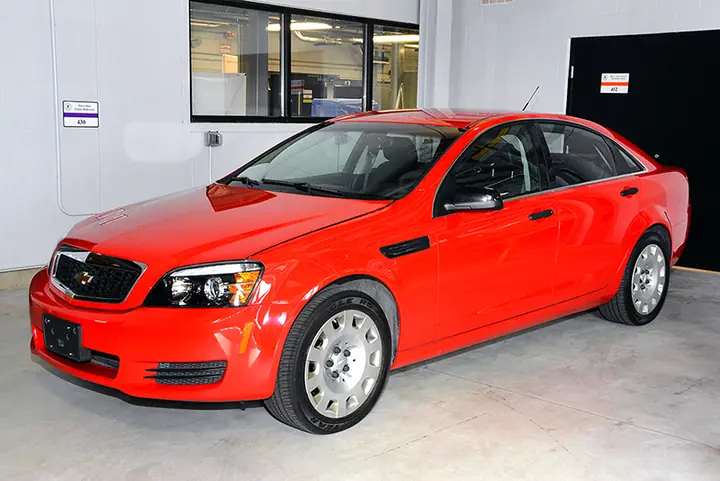
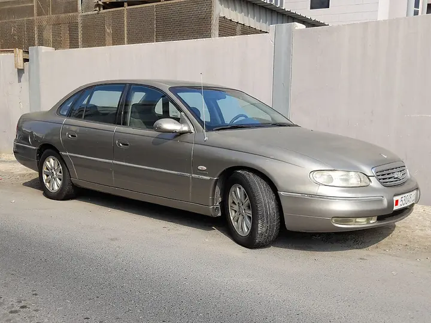
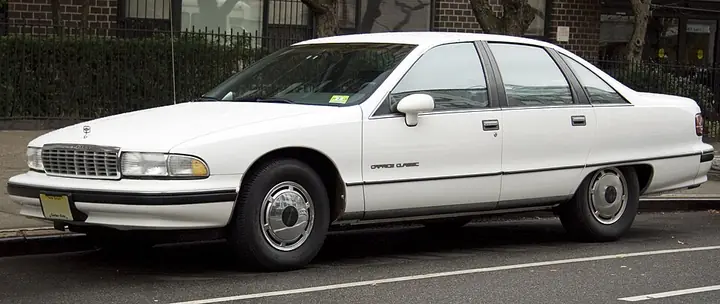
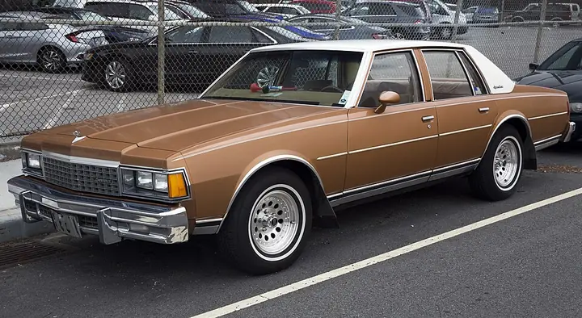
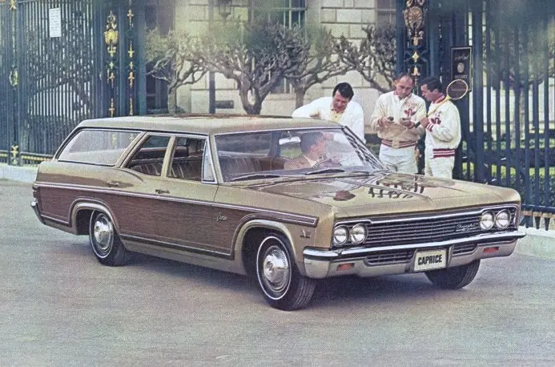

Chevrolet Caprice
Sixth generation (2006–2017) · 2006–2017
Abstract
This generation of the Chevrolet Caprice is a large car, built 2006–2017 in Australia: Adelaide, South Australia (Elizabeth). Body styles: 4-door sedan. Layout: Front-engine, rear-wheel-drive. Designed by Mike Simcoe.

.jpg){kind=link}
1Specifications
| Production | 2006–2017 |
|---|---|
| Model years | 2007–2016 (Middle East)2011–2017 (North America) |
| Assembly | Australia: Adelaide, South Australia (Elizabeth) |
| Designer | Mike Simcoe |
| Class | Large car |
| Body style | 4-door sedan |
| Layout | Front-engine, rear-wheel-drive |
| Platform | GM Zeta platform |
| Engine | 3.6 L LY7 V6 (240 hp)3.6 L LFX V6 (301 hp)6.0 L L77 V8 (355 hp)6.0 L L98 V8 (360 hp) |
| Transmission | 4-speed 4L60-E automatic6-speed 6L80 automatic |
| Wheelbase | 118.5 in |
| Length | 204.2 in |
| Width | 74.8 in |
| Height | 58.7 in |
| Weight | 1802-1890 kg |
| Also called | Buick Park Avenue (China)Holden WM/WN CapriceGM Daewoo Veritas (South Korea) |
| Related | Chevrolet CamaroChevrolet LuminaChevrolet SSHolden Commodore (VE)Holden Commodore (VF)Holden UtePontiac G8Vauxhall VXR8 |
| Predecessor | Pontiac G8 |
2Previous generations





.jpg){kind=link}




3Generation by generation
Length −7% from the first to the last
1971–1976 19705,585 mm
1977–1990 19765,479 mm
1991–1996 19905,438 mm
1999–2006 19995,194 mm
2006–2017 20065,187 mm
Weight −11% from the first to the last
1991–1996 19902,029 kg
1999–2006 19991,798 kg
2006–2017 20061,802 kg